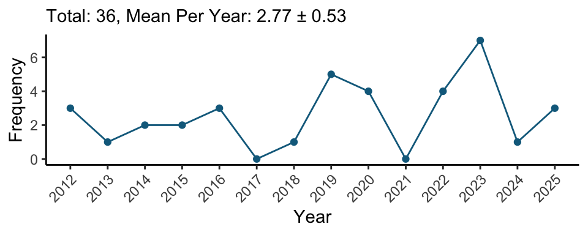

Curriculum Vitae
Updated on June 6, 2025
Education
Ph.D., Cognition and Neuroscience (2025)
The University
of Texas at Dallas
Advisors: Dr. Karen M. Rodrigue &
Dr. Kristen M. Kennedy
Dissertation: The effects of age and
dopaminergic predisposition on neurite microstructural properties and
working memory


B.A., Psychology (2012)
California State University,
Northridge
Advisor: Dr. Jose P. Abara
Research Experience
Graduate Research Assistant (2017 - 2025)
Cognitive
Neuroscience of Aging Laboratory
Center for Vital Longevity
School of Behavioral and Brain Sciences
The University of Texas
at Dallas

Graduate Research Assistant (2014 - 2016)
Lifespan Human
Senses Laboratory
Department of Psychology
San Diego State
University

Undergraduate Research Assistant (2011 - 2013)
Neuroscience Laboratory
Department of Psychology
California
State University, Northridge
Teaching Experience
The University of Texas at Dallas
1. Statistics for Psychology, ACN6312/HCS6312 (Spring 2019)
2. Statistics for Psychology, PSY2317 (Fall 2017, Spring 2018, Fall 2018)

San Diego State University
1. Advanced Statistics in Psychology, PSY670A/B (Fall 2015, Spring 2016)
2. Statistical Methods in Psychology Laboratory, PSY280L (Fall 2014, Spring 2015)
Publications
Poster Presentations

Pongpipat, E. E., Rodrigue K. M., & Kennedy, K. M. (2025, February). Cortico-striato-pallido-thalamic loop: Effects of age and dopaminergic predisposition on the spatial gradients of gray-matter neurite microstructural properties.. Poster session presented at the 2025 Dallas Aging and Cognition Conference, Dallas, Texas, United States
Edwards, V. M., Pongpipat, E. E., Lung, T.-C., Kraft, J. N., Rodrigue, K. M., & Kennedy, K. M. (2025, February). A comparison of automated and semi-automated white matter hyperintensity segmentation techniques.. Poster session presented at the 2025 Dallas Aging and Cognition Conference, Dallas, Texas, United States
Nguyen, L. T., Nair, J. K., Hoagey, D. A., Pongpipat, E. E., Kraft, J. N., Kennedy, K. M., & Rodrigue, K. M. (2025, February). Aging and Alzheimer’s disease risk factors are associated with differential 4-year decline in regional medial temporal lobe volumes. Poster session presented at the 2025 Dallas Aging and Cognition Conference, Dallas, Texas, United States
Lung, T., Pongpipat, E. E., Rodrigue, K. M., & Kennedy, K. M. (2024, June). Longitudinal BOLD Variability Change Coincides with Executive Function Change. Poster session presented at the 2024 Organization for Human Brain Mapping, Seoul, South Korea
Hoagey, D. A., Pongpipat, E. E., Rodrigue, K. M., & Kennedy, K. M. (2023, July). Estimates of structural brain health demonstrate regionally differential coupling in aging that aligns with underlying biology. Poster session presented at the 2023 Organization for Human Brain Mapping, Montreal, Quebec, Canada
Lung, T., Pongpipat, E. E., Rodrigue, K. M., & Kennedy, K. M. (2023, July). Longitudinal changes in fMRI task difficulty modulation: Differential relations to cognitive change. Poster session presented at the 2023 Organization for Human Brain Mapping, Montreal, Quebec, Canada
Edwards, V. M., Pongpipat, E. E., Miranda, G. G., Kennedy, K. M., & Rodrigue, K. M. (2023, February). Four-year age-related cortical thinning is modified synergistically by inflammation, beta-amyloid, and hypertension. Poster session presented at the 2023 Dallas Aging and Cognition Conference, Dallas, Texas, United States
Hoagey, D. A., Pongpipat, E. E., Rodrigue, K. M., & Kennedy, K. M. (2023, February). White and gray matter structural brain properties demonstrate regionally differential coupling in aging corresponding with underlying biology. Poster session presented at the 2023 Dallas Aging and Cognition Conference, Dallas, Texas, United States
Lung, T., Pongpipat, E. E., Rodrigue, K. M., & Kennedy, K. M. (2023, February). Aging-related differences in BOLD modulation and its relation to cognitive control: A longitudinal fMRI study. Poster session presented at the 2023 Dallas Aging and Cognition Conference, Dallas, Texas, United States
Miranda, G. G., Pongpipat, E. E., Gonen, C., Rodrigue, K. M., & Kennedy, K. M. (2023, February). Dopaminergic genetic influence on longitudinal change in cortical thickness and age-associated executive function. Poster session presented at the 2023 Dallas Aging and Cognition Conference, Dallas, Texas, United States
Skotnicki, M. H., Kennedy, K. M., Miranda, G. G., Pongpipat, E. E., & Rodrigue, K. M. (2023, February). Baseline subjective memory complaints predict four-year cortical thinning. Poster session presented at the 2023 Dallas Aging and Cognition Conference, Dallas, Texas, United States
Pongpipat, E. E., Boylan, M. A., Lung, T., Kennedy, K. M., & Rodrigue, K. M. (2022, June). Four-year change in BOLD variability differs by task difficulty, beta-amyloid deposition, and aging. Poster session presented at the 2022 Organization for Human Brain Mapping, Glasgow, Scotland
Pongpipat, E. E., Lung, T., Kennedy, K. M., & Rodrigue, K. M. (2022, January, accepted). Four Year Longitudinal Change in Task-Related BOLD Modulation across the Adult Lifespan. Poster session presented at the 2022 Dallas Aging and Cognition Conference, Dallas, Texas, United States. (Conference cancelled due to COVID-19 omicron variant).
Pongpipat, E. E., Boylan, M. A., Kennedy, K. M., & Rodrigue, K. M. (2022, April). Influence of β-Amyloid and Age on BOLD variability during n-back. Poster session presented at the 2022 Cognitive Aging Conference, Atlanta, Georgia, United States
Kennedy, K. M., Pongpipat, E. E., Boylan, M. A., Lung, T., Rodrigue, K. M. (2022, April). Age-related longitudinal change in BOLD variability during working memory load is dependent upon beta-amyloid deposition. Poster session presented at the 2022 Cognitive Neuroscience Society, San Francisco, California, United States
Pongpipat, E. E., Boylan, M. A., Foster, C. M., Web, C. E., Kennedy, K. K., & Rodrigue, K. M. (2020, June). Which BOLD feature is most important to working memory performance?. Poster session presented at the 2020 Organization for Human Brain Mapping, Virtual
Pongpipat, E. E., Kennedy, K. M., Boylan, M. A., & Rodrigue, K. M. (2020, April, accepted). Which is More Important to n-back Performance: Changes in BOLD or Changes in BOLD Synchronization?. Poster session presented at the 2020 Cognitive Aging Conference, Atlanta, Georgia, United States. (Conference cancelled due to COVID-19).
Boylan, M. A., Rodrigue, K. M., Webb, C. E., Pongpipat, E. E., & Kennedy, K. M. (2020, April, accepted). Influence of β-Amyloid and Age on BOLD Variability during n-back. Poster session presented at the 2020 Cognitive Aging Conference, Atlanta, Georgia, United States. (Conference cancelled due to COVID-19).
Kennedy, K. M., Foster, C. M., Webb, C. E., Pongpipat, E. E., Boylan, M. A., & Rodrigue, K. M. (2020, April, accepted). Four Year Longitudinal Change in Task-Related Functional Activation across the Adult Lifespan. Poster session presented at the 2020 Cognitive Aging Conference, Atlanta, Georgia, United States. (Conference cancelled due to COVID-19).
Murphy, C., Pongpipat, E. E., Jacobson, A. (2019, September). Is Eating Disinhibition Associated with Altered Functional Connectivity of the Primary Gustatory Cortex with Secondary Gustatory Cortex, Reward or Memory Regions in Metabolic Syndrome?. Poster session presented at the 2019 Chemical Senses Conference, Bonita Springs, Florida, United States
Kmiecik, M. J., Martin, A. D., Kim, L. M., Perez, R., Martinez, D. M., Pongpipat, E. E., & Krawczyk, D. C. (2019, March). Relational Match-to-Sample in Primates: The Interesting Case of the Human. Poster session presented at the 26th Annual Meeting of the Cognitive Neuroscience Society, San Francisco, California, United States
Hoagey, D. A., Foster, C. M., Pongpipat, E. E., Rodrigue, K. M., & Kennedy, K. M. (2019, June). White matter hyperintensities evidence altered diffusion properties suggestive of poorer white matter health in aging. Poster session presented at the 2019 Organization for Human Brain Mapping Annual Meeting, Rome, Italy
Pongpipat, E. E., Foster, C. M., Boylan, M. A., Kennedy, K. M. & Rodrigue, K. M. (2019, January). Examination of the relationship among n-back functional connectivity, task performance, and cortical thickness across the adult lifespan. Poster session presented at the 2019 Dallas Aging and Cognition Conference, Dallas, Texas, United States
Leverett, S. D., Boylan, M. A., Pongpipat, E. E., Rodrigue, K. M., Kennedy, K. M (2019, January). Personality, Cognition, and Aging: How and when do personality traits affect executive functioning?. Poster session presented at the 2019 Dallas Aging and Cognition Conference, Dallas, Texas, United States
Pongpipat, E. E., Boylan, M. A., Foster, C. M., Kennedy, K. K. (2018, November). Functional connectivity of the fronto-parietal and default mode network during n-back across the adult lifespan. Poster session presented at the 48th Annual Meeting of the Society for Neuroscience, San Diego, California, United States
Pongpipat, E. E., Jacobson, A. & Murphy, C. (2016, November). Metabolic Syndrome is Associated with Altered Functional Connectivity of Primary and Secondary Taste Cortices and Eating Disinhibition. Poster session presented at the 46th Annual Meeting of the Society for Neuroscience, San Diego, California, United States
Vertrees, R. B., Pongpipat, E. E., McIntosh, E. C., & Murphy, C. (2016, November). Cortical correlates of metabolic syndrome risk factors and hunger in middle aged and older adults. Poster session presented at the 46th Annual Meeting of the Society for Neuroscience, San Diego, California, United States
Pongpipat, E. E., Jacobson, A. & Murphy, C. (2016, April). Metabolic Syndrome is associated with decreased medial temporal lobe cortical thickness and impaired memory ability. Poster session presented at the 96th Annual Convention of the Western Psychological Association, Long Beach, California, United States. (Awarded 2016 Western Psychological Association Student Scholarship Award for Outstanding Quality of Research Presented at the Annual Convention).
Pongpipat, E. E., Jacobson, A. & Murphy, C. (2015, November). Functional Connectivity of Taste Sensory and Pleasantness Pathway in Metabolic Syndrome. Poster session presented at the Annual Convention of the Obesity Society and ObesityWeek, Los Angeles, California, United States
Pongpipat, E. E., & Murphy, C. (2015, April). Effects of Cognitive Decline on Odor Threshold and Identification in Alzheimer’s disease. Poster session presented at the 95th Annual Convention of the Western Psychological Association, Las Vegas, Nevada, United States. (Awarded 2015 Western Psychological Association Student Scholarship Award for Outstanding Quality of Research Presented at the Annual Convention).
Pongpipat, E. E., Magaña, V.M., Sarkissians, S., Camacho, V. & Abara, J.P. (2014, April). An ERP Study of Expectation and Motor Preparation Following Neurofeedback Procedure. Poster session presented at the 94th Annual Convention of the Western Psychological Association, Portland, Oregon, United States. (Awarded 2014 Western Psychological Association Student Scholarship Award for Outstanding Quality of Research Presented at the Annual Convention).
Kelson, C.Y., Pongpipat, E. E., & Abara, J.P. (2014, April). Functional Impact of Neurofeedback on Veterans with PTSD. Poster session presented at the 35th Annual Meeting of the Society of Behavioral Medicine, Philadelphia, Pennsylvania, United States
Neswald, J., Pongpipat, E. E., Magaña, V.M., Sarkissians, S., Lenik, C., Barb, D., & Abara, J.P. (2013, November). The Amplitude of the Contingent Negative Variation Following Neurofeedback Procedure. Poster session presented at the 43rd Annual Meeting of the Society for Neuroscience, San Diego, California, United States
Magaña, V.M., Pongpipat, E. E., Rodriguez, T., Camacho, V., Valadez, E.A., & Abara, J.P. (2012, October). The Effects of Cell Phone Use on the P3 of the Event-Related Potential and on Response Time. Poster session presented at the 42nd Annual Meeting of the Society for Neuroscience, New Orleans, Louisiana, United States
Scott, N.A., Magaña, V.M., Pongpipat, E. E., Salehi, N.L., Barb, D., & Abara, J.P. (2012, October). An ERP Study of Inhibitory Response During Cell Phone Use. Poster session presented at the 42nd Annual Meeting of the Society for Neuroscience, New Orleans, Louisiana, United States
Pongpipat, E. E., Magaña, V.M., Camacho, V., Neswald, J., Barb, D., Lenik, C., Castillo, G., Arab, A., & Abara, J.P. (2012, April). Cell Phone Use Delays Inhibitory Response. Poster session presented at the 93rd Annual Convention of the Western Psychological Association, Reno, Nevada, United States
Talks and Workshops
Service to the Profession
- Reviewer for Psychophysiology
- Co-reviewer with Dr. Kristen Kennedy for NeuroImage and Journal of Cognitive Neuroscience
- Co-reviewer with Dr. Karen Rodrigue for Cerebral Cortex and Journal of Neuroscience
Honors and Awards
| Honor | Institution | Award | |
|---|---|---|---|
| 2023 | Student Scholarship Award | The University of Texas at Dallas | $1,000 |
| 2020 | Student Travel Award | The University of Texas at Dallas | $1,000 |
| 2018 | Student Travel Award | The University of Texas at Dallas | $1,000 |
| 2016 | Honorable Mention for Outstanding Service as a Teaching Assistant | San Diego State University | |
| 2016 | Robert L. Solso Award | Western Psychological Association | $500 |
| 2015 | Dr. Edward Geldreich Scholarship | San Diego State University | $425 |
| 2015 | Robert L. Solso Award | Western Psychological Association | $500 |
| 2014 (June) | Teacher of the Month | Huntington Learning Center | |
| 2014 | Student Scholarship Award | Western Psychological Association | $500 |
| 2014 (January) | Teacher of the Month | Huntington Learning Center | |
| 2012 (Fall) | Dean’s List | CSU Northridge | |
| 2011 (Spring) | Dean’s List | CSU Northridge | |
| 2011 (Fall) | Dean’s List | CSU Northridge | |
| 2010 (Spring) | Dean’s List | CSU Northridge | |
| 2010 (September) | Clinical Care Extender Intern of the Rotation Award | Cope Health Solutions | |
| 2017 (Fall) | Dean’s List | CSU Northridge | |
| sum | — | — | $4,925 |
Professional Society Membership
| Year | Organization |
|---|---|
| 2024 - Present | International Society for Tractography |
| 2020 - Present | Organization for Human Brain Mapping |
| 2020 - Present | Cognitive Neuroscience Society |
| 2012 - Present | Society for Neuroscience |
| 2016 - 2017 | Phi Kappa Phi Honor Society |
| 2015 - 2017 | The Obesity Society |
| 2012 - 2016 | Western Psychological Association |